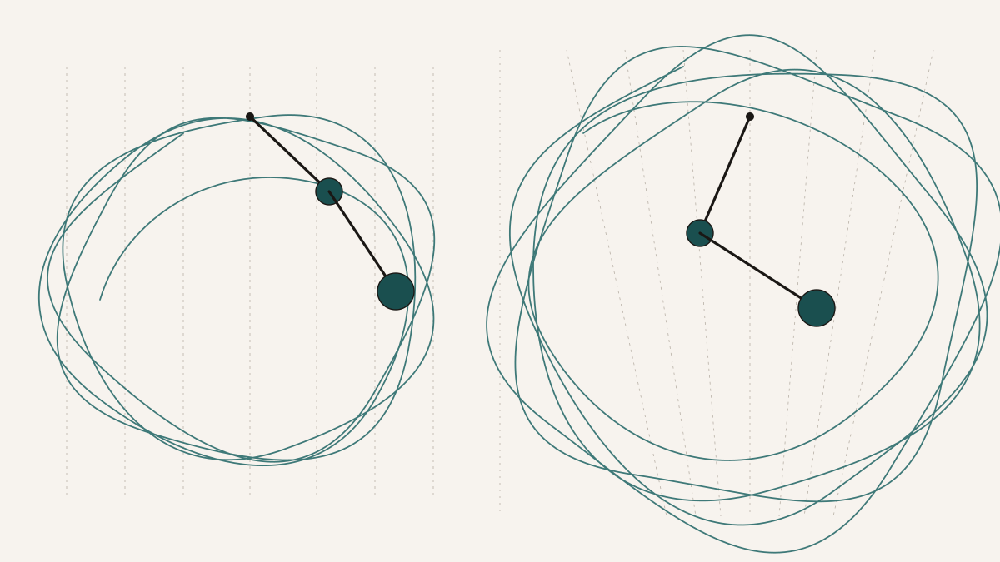
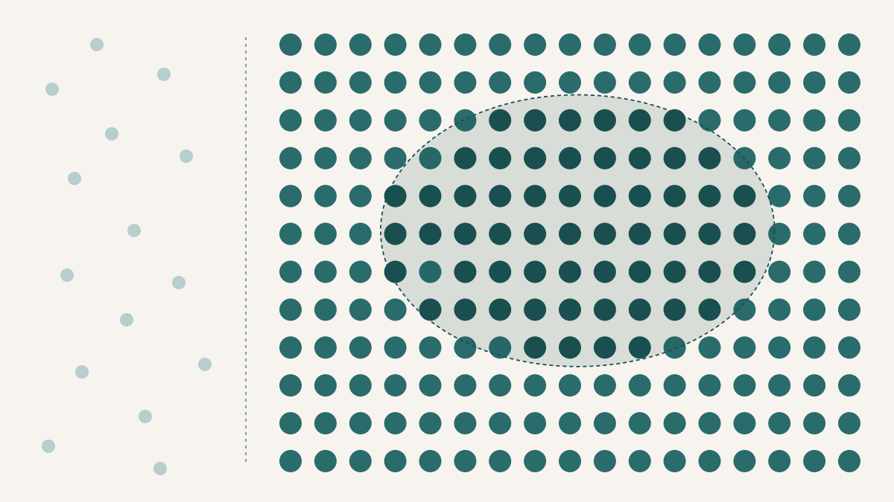
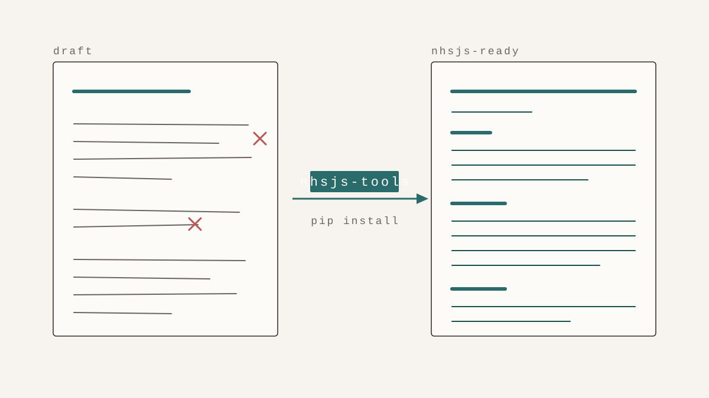
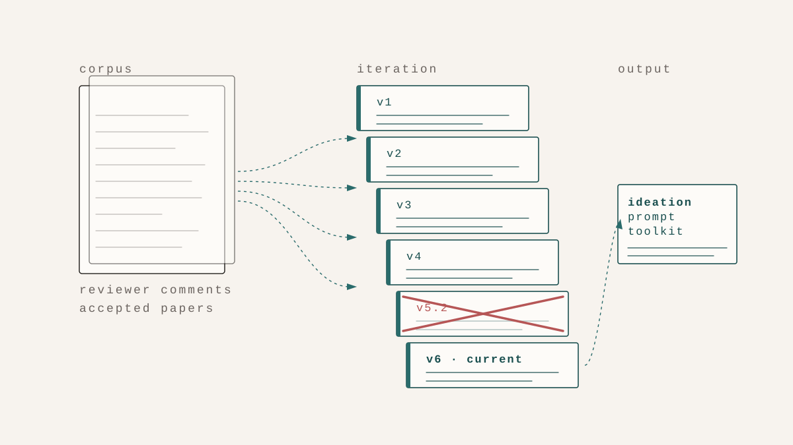
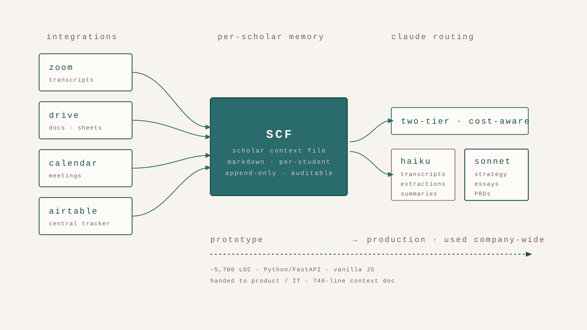

Ninaad Adhvaryu
I build analytical pipelines for problems that resist clean categorisation. My training is in computational physics — numerical solvers, condensed matter, simulation — but my working context has ranged from mangrove cover mapping to cricket wicket prediction to endangered-language speech recognition.
I care about making technical work legible: to collaborators, to students, to decision-makers. Teaching interdisciplinary seminars at Ahmedabad University and mentoring student research at Athena Education have been as central to that as the computation.

at a glance
Education
Current
Prior
inquiries
A selection of technical work produced through my role at Athena Education — open questions I have pursued long enough to have something to say about them.
featured essays · selected technical work

Physics · Nonlinear Dynamics
If you change the shape of gravity, does chaos follow?
On what happens to a double pendulum when "downward" is no longer constant — and on what that reveals about the assumptions quietly built into every physical model.
Read full essay →
Sports Analytics · Spatial Statistics
Does the "corridor of uncertainty" actually take wickets?
On a ball-by-ball Hawkeye study of ~140,000 IPL deliveries — and on the one pooled result that wouldn't behave until the data were stratified by bowling style and match phase.
Read full essay →
Environment · Complex Systems
How dense does a forest have to be before a spark matters?
On local connectivity thresholds in forest-fire models — and on why the geography of ignition points matters more than global forest density.
Read full essay →
Econophysics · Agent-Based Modeling
When does a market tip from many small sellers to one dominant platform?
On a statistical-physics model of consumer choice between digital platforms and local vendors — and on how two perfectly reasonable simulation engines can disagree about which knob is doing the work.
Read full essay →more inquiries
-
Data · Personal Analytics
What does four years of browser tabs actually look like?
Complete -
Linguistics · Data Analysis
When English took over the chorus, but not the chart.
Complete -
Environment · Geospatial
What happens when a forest dataset meets a mangrove?
Complete -
Infrastructure · Simulation
Can geometry substitute for infrastructure in a disaster?
Complete -
Language · NLP
What does a language need before a machine can hear it?
Complete -
Astrophysics · ML
How do you find a planet by learning the shape of its absence?
Complete -
Computational Musicology · Probabilistic Models
What does a first-order Markov chain know about a raga?
Complete -
Information Theory · Cognitive Science
Can a single number tell you how hard a Sudoku is?
Complete -
General Relativity · Geodesy
What if space flows like a river past the event horizon?
Complete -
Cosmology · Large-Scale Structure
How real is the largest structure in the universe?
Complete -
Fractal Geometry · Geospatial Analysis
How many fractal dimensions does a coastline have?
Complete -
Geodesy · Data Compression
How many numbers does it take to store the shape of gravity?
Complete
building
Software and systems I've built and shipped at Athena Education — tools my colleagues use daily, iterated against actual use, and in one case handed off to the product team to take to production.
internal tools · shipped systems

Tooling · Python Package
What if the formatting rules were code, not a checklist?
On encoding a journal's submission requirements as a Streamlit app and pip-installable package — and on what happens when the same five mistakes stop being mentor problems and become problems the tool refuses to make.
Read full essay →
Research Tooling · LLM Systems
Can an ideation tool learn from what reviewers actually accept?
On six versions of a research-ideation toolkit grounded in the corpus of accepted papers and reviewer comments — and on why v5.2 had to be discarded after the conversation data showed it added schema without adding lift.
Read full essay →
Internal Platform · Vibe-Coded → Production
What if every team member could see every meeting they weren't in?
On a vibe-coded internal platform that turned Zoom transcripts into shared scholar context — demoed to leadership, handed off to product and IT for productionisation, and now used company-wide.
Read full essay →MSc Thesis · University of Stuttgart · 2023
Dipolar Quantum Gases under Rotation
My MSc thesis asked a deceptively narrow question: can we reliably compute the ground state of a rotating dipolar Bose–Einstein condensate, and how do two distinct numerical methods compare when they try? The system is a cloud of 75,000 dysprosium atoms — one of the most magnetic elements in the periodic table — cooled to within billionths of a degree of absolute zero, then spun. At that temperature, quantum mechanics stops being a correction and becomes the whole story.
What makes dipolar condensates unusual is that their atoms don't just interact when they touch. The magnetic dipole–dipole interaction reaches across space, couples to rotation, and introduces an anisotropy that no standard condensate has. When the cloud spins fast enough, it doesn't swell uniformly — it nucleates vortices, quantised holes in the wavefunction arranged in a hexagonal lattice. The image above shows one such configuration: three vortex cores in a triangular arrangement — the seed of an Abrikosov-like lattice — sitting inside the condensate density envelope, with the multigrid mesh refining around them.
The thesis developed and tested two complementary ground-state solvers — a preconditioned Conjugate Gradient Method and Imaginary Time Evolution with Strang operator splitting — on the full extended Gross–Pitaevskii equation, including the Lee–Huang–Yang quantum fluctuation correction. A Cascadic Multigrid Method reduced computation times by up to 22× by seeding fine-grid runs from coarse solutions. The essay below goes through all of this in detail.
Read full essay →writing
Crossmopollinate
Postcoloniality, Ted Lasso, Masculinity and Cultural Cachet
On what a show about an American football coach in England reveals about the politics of soft masculinity, cultural exportability, and whose warmth gets to travel.
University of Stuttgart · Master's Thesis
Dipolar Quantum Gases under Rotation
Numerical study of vortex formation in rotating dipolar Bose–Einstein condensates using conjugate-gradient ground-state searches and imaginary-time evolution on discretised grids. Pi5 group, supervised by Dr. Tilman Pfau.
teaching
All teaching was at Ahmedabad University, where I served as Teaching Assistant across the Foundation Programme and several interdisciplinary seminars in 2024–25.
Emergence: Complex Systems in Science & Society · Instructor Role
What the Word "Emergence" Does to a Room
I designed and delivered this four-week seminar from scratch — choosing readings, structuring sessions, and writing all materials. Students from physics, computer science, and philosophy read Anderson, Schrödinger, and Turing side by side, integrating quantitative models with qualitative readings on complexity across science and society. They produced 20-page interdisciplinary research papers with emphasis on modelling assumptions and evidence.
PublishedFeminism is for Everybody
Interdisciplinary course on feminist theory and practice. Facilitated discussions connecting abstract concepts to contemporary social issues; provided feedback on argumentation, clarity, and engagement with readings.
Foundation Programme
Interdisciplinary, project-based learning across studios including Environment & Climate Change, Water, and Democracy & Justice. Co-developed the Foundation Programme Handbook consolidating lesson plans, activities, and onboarding material; trained incoming TAs. Assessed student work with structured rubrics and provided iterative feedback on research design, argumentation, and written communication.
contact
Open to research collaborations, teaching, and applied work — especially where technical depth meets real-world stakes.